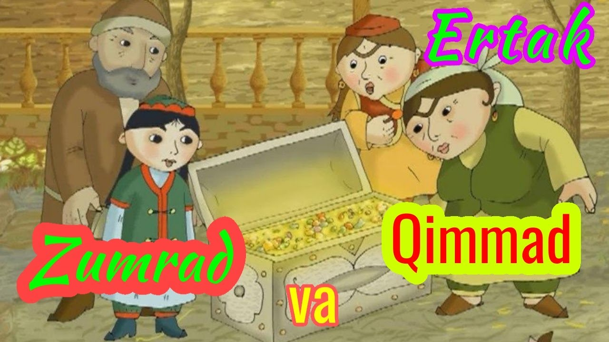

Zumrad va qimmat (1-qism)
Bir bor ekan, bir yo‘q ekan, bir chol bor ekan. Uning Zumrad ismli qizi bor ekan. Chol bir qizi bor ayolga uylanibdi. Qizining ismi Qimmat ekan. O‘gay ona Zumradni yoqlirtmas ekan. Eng og‘ir ishlarni unga buyurar, qarg‘ab, urarkan. O‘zining qizini juda yaxshi ko‘rarkan, doim uni maqtagani maqtagan ekan. Zumrad aqlli, chiroyli va muloym qiz ekan. Qimmat esa unga hech ham o‘xshamas ekan. U tantiq, qo‘pol va dangasa ekan. Kun bo‘yi ovqat yer, bo‘lar-bo‘lmasga urisharkan. Har tong qushlar ham, gullar ham Zumradni qo‘shiq kuylab, olqishlab kutib olar, Qimmatni esa ular yoqtirmas edilar, chunki u gullarni yulib tashlar, tepkilar, qushlarga tinchlik bermasdi. O‘gay ona bularni ko‘rib turardi. Zumraddan qutilmoqchi bo‘lib cholga: -Agar q’izingni yo‘qotmasang, sen bilan birga yashamayman! Uni o‘rmonga olib borib tashla! — deb qichqiribdi. Chol nima qilarini bilmay qolibdi. Kampir esa tinchlik bermasmish. Chol Zumradni o‘rmonga olib boribdi. Ular uzoq yurishibdi, o‘rmon ichiga kirishibdi. Shu yerda o‘tirib tur, qizim. Men o‘tin kesib kelaman, — debdi chol. Uzoqroqqa borib, boltasini daraxtga osib qo‘yibdi: “Taq! Taq!”-bolta shamolda daraxtga urilarmish. Zumrad taqillagan ovozni eshitib, “otam o‘tin kesyapti” deb o‘ylabdi. U otasini uzoq kutibdi, lekin darak bolmabdi. Taqillagan ovoz ham chiqmay qolibdi. Otasini qidirib yursa, bexosdan bolta osilgan daraxt tagiga borib qolibdi. Qarasa, otasi yo‘q emish. Zumrad qo‘rqqanidan yig‘lab yuboribdi. U o‘rmonda uzoq yurib, adashib qolibdi. O‘rmon ichi qo‘rqinchli tusga kira boshlabdi. Ancha kech bo‘lib qolgan edi-da. Nihoyat bir yorug‘lik ko‘rina boshlabdi. Zumrad o‘sha tomonga qarab yura boshlagan ekan, bir kichkina uycha yoniga kelib qolibdi.